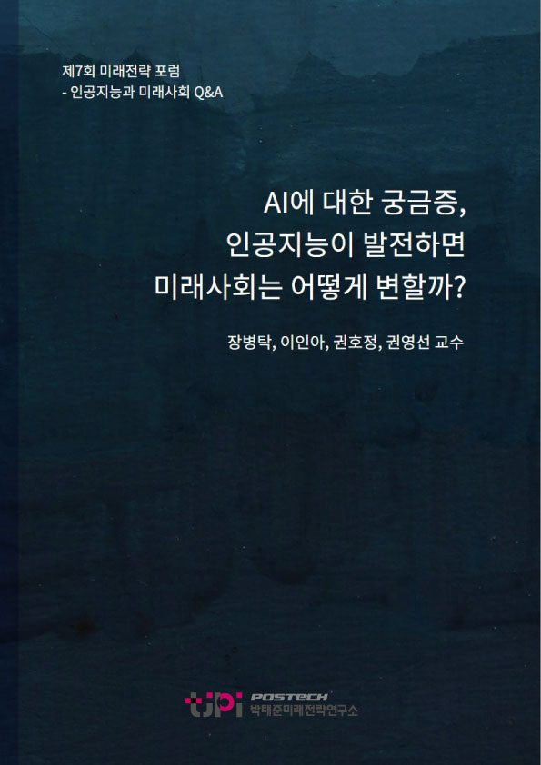
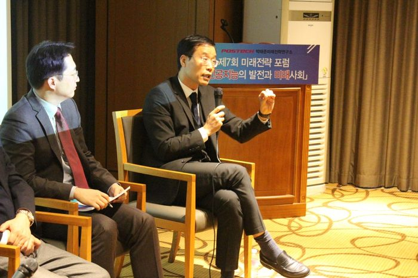
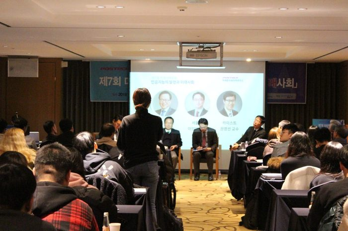
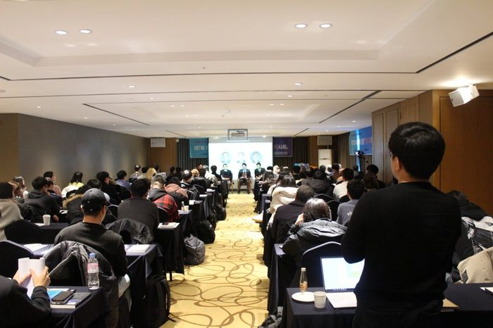
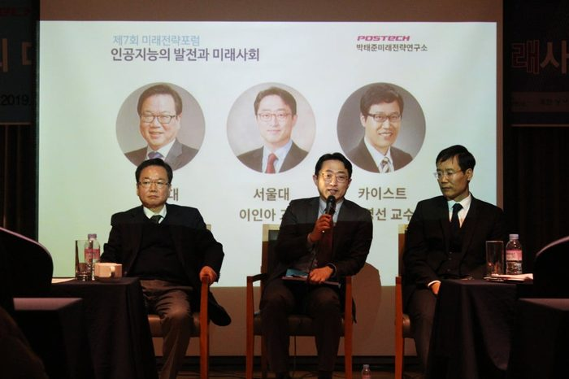
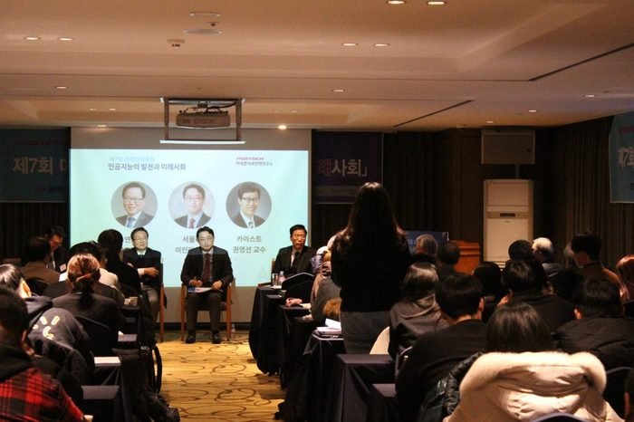
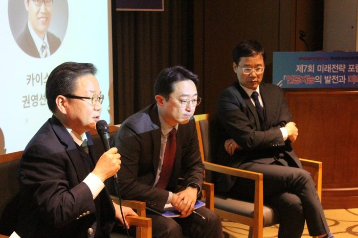
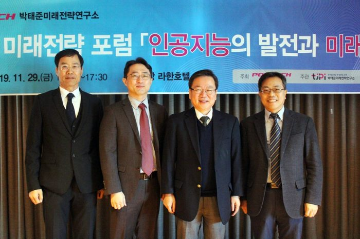

저자 장병탁, 이인아, 권호정, 권영선연재일 2020. 6. 25

요 약
지난 포
스텍 박태준미래전략연구소 제7회 미래전략 포럼
'인공지능(AI)의 발전과 미래사회 - 『또 다른 지능, 다음 50년의 행복』' 의 질의응답을 정리한 내용이다.
목 차
1. 인공지능의 중요성이 확산되고 있는데 대학교육은 어떻게 변해야 할까?
2. IT 신기술을 접목한 교육환경의 개선 방안을 연구 중이다. 인공지능을 접목한 개인맞춤형 교육이 이뤄지는 있는 구체적인 사례와 앞으로의 변화에 대해 어떻게 예측하는가?
3. 최근 딥 페이크(Deep Fake)를 통해 이윤창출을 하는 ‘인공지능의 어두운 면’이 이슈화 됐다. 인공지능 연구자들은 이 부분에 대해 어떻게 대처하고 있는가?
4. '기술이 인간을 지배 한다’는 말처럼 인간의 기술이 발전할수록 또 다른 지배에 빠져드는 계몽의 변증법이 나타나고 있다. 인공지능의 어두운 면(Deep Fake)에 대해 인공지능으로 대처하는 방법을 찾기 전에 인간이 인간으로써 무엇이 잘못됐고, 그런 것을 왜 하면 안 되는 지에 대한 교육이 먼저여야 한다고 생각한다. 만약 이런 상황에서 인공지능으로 대처하게 되면 이것 또한 계몽의 악순환에 빠지는 것이 아닐까? 그래서 인공지능이 필요하지 않다는 생각도 한다. 정말로 인공지능이 필요하다고 생각하는가?
5. 트롤리의 딜레마처럼 동일한 상황이라도 어떤 사람은 A가 어떤 사람은 B가 옳다고 여길 수 있다. 어느 쪽이 더 적합한가에 대한 가치판단을 누가 할 것이며, 사회적 합의를 이끌어 낼 수 있는 방법은 무엇인가?
6. 이인아 교수께서 말씀하신 ‘기계한테 완벽을 요구한다는 것’은 우리가 요구하는 인공지능은 Humanlike가 아닌 그 이상의 것을 의미하는 것이라면 인공지능은 무엇을 목표로 개발되고 있는가?
7. 창의라는 것이 기존에 어떤 것을 만들어 내는 거라면, 인공지능은 여러 개의 단어를 통해 새로운 것을 만들어 인간보다 더 창의적인 것을 보여줄 수 있다고 생각한다. 창의성이 언제까지 인간의 영역으로 남을 수 있을까?
8. 알파고의 계산 방식은 수만 가지 확률을 계산해서 최적의 결과를 도출한 것이다, ‘생존’이라는 목적이 주어졌을 때 확률 계산을 통해 결과를 도출해 낼 수 있다고 생각한다. 인공지능의 확률 계산을 통해 인간의 생존 문제 즉, 인간이 판단하지 못하는 행동까지 예측하고 해결할 수 있지 않을까?
9. 現 인공지능의 한계점을 말씀하실 때 ‘감정이라는 것이 인간의 뇌에서 확실히 규명되지 않았기 때문에 모방하기 힘들다‘라고 하셨는데 뇌 과학에서 감정의 원리 규명에 대한 연구가 얼마나 진행되었고 완벽하게 규명될 가능성이 얼마나 있는가?
10. 인공지능이 인간을 대신해서 기억이나 계산을 하게 되면 이를 담당하던 뇌의 기능이 퇴화될 수 있지 않을까, 오히려 인류가 인공지능으로 인해 멍청해질 가능성은?
11. 인공지능의 기술개발은 고비용이 든다. 기술도 기업의 이윤이 발생돼야 지속적인 개발이 가능하기 때문에 머지않아 인공지능의 암흑기가 올 것이라고 주장하는 학자도 많다. 어떻게 생각하는가?
12. 권영선 교수께서 ‘4차 산업혁명시대에 인공지능에 대한 선점적 우위에 있기 위해서는 제도개선 경쟁이 필요하다’고 말씀하셨는데, 결국 우리나라는 제도가 늦게 바뀌기 때문에 기술변화가 늦다는 것을 의미인가?
13. 인공지능의 필요성, 잠재성이 커지는데 우리나라가 세계 경제를 선두하기 위해 규제개혁과 기업의 역할이 중요하다고 생각한다. 기업이 인공지능 기술을 적극적으로 수용하고 활용하는데 있어 저해 요소가 무엇이며, 이를 해결하기 위해 기업과 사회 입장에서 어떤 결정을 해야 할까?
디지털 트윈(Digital Twin)이 사회적으로 집중 받지 못하는 이유는 무엇인가?
14. 인공지능 시대에는 일자리에 대한 대격변이 있을 것이고 양극화가 심해질 것으로 예측되고 있다. 이에 대한 방안으로 기본소득에 대한 여러 가지 의견이 나오고 있는데 인공지능시대의 기본소득에 대해 경제학자로서 어떻게 생각하는가?
15. 또 다른 지능’이라는 네이밍(Naming)은 박태준미래전략연구소에서 유일하게 사용하고 있다. ‘또 다른 지능’에 대한 정의는 무엇인가?
내 용
[인공지능과 미래사회 Q&A] AI에 대한 궁금증, 인공지능이 발전하면 미래사회는 어떻게 변할까?
장병탁, 이인아, 권호정, 권영선
인공지능(AI)의 발전과 미래사회
변화에 대한 궁금증
인공지능, 뇌공학, 생명공학, 경제학 전문가에게 물었다.
표준화된 지식은 온라인으로
대학은 창의력을 발휘할 수 있는 교육으로
인공지능의 중요성이 확산되고 있는데 대학교육은 어떻게 변해야 할까?
권호정 교수
: 지금까지 교육의 패러다임은 빠르게 변해왔고 다가오는 미래는 변화의 시대가 될 것이다. 앞으로 우리가 살아야 할 시대는 능동적이고 주체적인 교육 즉, 플립러닝(Flipped Learning) 학생참여 교육으로 변화할 것이다.
이인아 교수
: 대학에서 단순지식을 전달하는 교육방식은 사라질 것이다. 앨런 튜링은 ‘가끔은 생각지도 못한 누군가가 누구도 생각지 못한 일을 해 낸다’고 했다. 과학이라는 것은 사람의 눈과 감각기관이 볼 수 없는 세상의 법칙을 발견하는 것이며, 호기심에서 시작해 거대한 법칙을 발견해내는 과정이다. 처음은 여러분의 눈과 귀에서 시작한다. 대학에서 해야 하는 일은 개개인이 가지고 있는 독특한 시각, 생각을 가지고 거대한 문제를 풀 수 있도록 도전하게 만드는 교육이나 시스템으로 발전할 것이다.
권영선 교수
: 이미 표준화된 교육은 온라인으로 전환되고 있다. 인공지능 시스템을 통한 맞춤형 교육이 발전하고 있다. 미네르바 스쿨의 교육의 경우 온라인 양방향 교육으로 진행되며 실시간 모니터링도 가능하다. 학생들의 참여와 태도 등이 모두 감시된다는 점에서 ‘학교가 노동의 현장이 되어가는 것이다‘라는 부정적 의견을 내 놓는 사람도 있지만 향후 표준화된 지식은 온라인을 통해 습득하고 대학은 창의력을 발휘하게 할 수 있는 교육으로 가야된다고 생각한다.
박태준미래전략연구소 © 카이스트 경제학(기술경영학) 권영선교수
IT 신기술을 접목한 교육환경의 개선 방안을 연구 중이다. 인공지능을 접목한 개인맞춤형 교육이 이뤄지는 있는 구체적인 사례와 앞으로의 변화에 대해 어떻게 예측하는가?
권호정 교수
: 현재 미국, 영국, 중국, 인도 등에 개발이 상당히 진행되고 있다. 미국 스탠포드 대학의 생명 관련 분야에서는 단백질 구조를 분석하기 위해 인공지능을 이용한 사례가 있다. 나 또한 플립러닝(Flipped Learning) 방식을 강의에 적용해 학생들에게 좋은 반응을 얻고 있다.
권영선 교수
: 토익공부를 강화학습 방법으로 제공하는 예를 들 수 있다. 틀린 문제만 집중적으로 훈련시켜 단기간에 토익점수를 높이는 비즈니스가 시작됐다고 들었다. 실제 사람의 창의력은 무궁무진해서 더 많이 개발될 것이다.
딥 페이크와 같은 인공지능의 악이용을 감식할 수 있는 기능이 필요하다.
최근 딥 페이크(Deep Fake)를 통해 이윤창출을 하는 ‘인공지능의 어두운 면’이 이슈화 됐다. 인공지능 연구자들은 이 부분에 대해 어떻게 대처하고 있는가?
권영선 교수
: 창과 방패라고 본다. 방패도 인공지능으로 할 수 밖에 없다. 인공지능을 통해 강화시켜 나가는 것이 실현가능한 방법이라 생각한다.
권호정 교수
: 우리는 알파고가 어떤 알고리즘 사용했고 의사결정을 했는지 그 과정을 알지 못한다. 이는 세 살짜리 아이에게 총을 맡기는 것과 같다. 따라서 이를 중재시킬 수 있는 시스템이 필요하다. 예를 들어 세포증식이 빠르면 이를 억제하는 기능이 있는데 이 기능이 망가지면 암으로 발전하게 된다. 따라서 인공지능이 만들어 낸 것이 우리가 원하지 않는 방법으로 나타날 경우, 개발 단계부터 내부에서 중재시킬 수 있는 감식(Surveillance) 기능을 만들어야 한다.
질의응답 ©출처.포스텍 박태준미래전략연구소 제7회 미래전략포럼
'기술이 인간을 지배 한다’는 말처럼 인간의 기술이 발전할수록 또 다른 지배에 빠져드는 계몽의 변증법이 나타나고 있다. 인공지능의 어두운 면(Deep Fake)에 대해 인공지능으로 대처하는 방법을 찾기 전에 인간이 인간으로써 무엇이 잘못됐고, 그런 것을 왜 하면 안 되는 지에 대한 교육이 먼저여야 한다고 생각한다. 만약 이런 상황에서 인공지능으로 대처하게 되면 이것 또한 계몽의 악순환에 빠지는 것이 아닐까? 그래서 인공지능이 필요하지 않다는 생각도 한다. 정말로 인공지능이 필요하다고 생각하는가?
권영선 교수
: 인공지능은 필요하다. 전 세계가 인공지능 개발에 몰두하고 있다. 인공지능에 대한 개발을 멈춘다면 우리나라는 국제적으로 살아남지 못하고 국민들의 자급자족 생태계가 불가능해질 것이다. 다만 Deep Fake 문제는 인공지능을 디자인 단계부터 어떻게 만들어야 이러한 문제를 줄일 수 있는지 내재화된 시스템 도입이 필요하고 생각한다.
이인아 교수
: 필요 여부를 섣부르게 판단할 필요는 없다. 인간은 환경의 변화에 맞춰 살아왔고 스마트폰(계몽의 변증법이 나타난 예)도 인간이 만든 것으로 인류가 선택한 환경이다. 공학자들의 기술적인 호기심이 인간의 필요와 맞으면 폭발적인 현상으로 나타나게 된다. 따라서 인공지능은 필요 여부의 문제를 넘어서 계속해서 개발될 것이고 동시에 Deep fake에 대한 대응법도 개발되어야 할 것이다.
권호정 교수
: 인공지능이 과연 필요한가라는 본질적인 질문을, 이런 자리에서 함께 공유할 수 있다는 것에 우선 뜻깊은 시간이라 생각한다. 본질적 존재에 대한 질문을 할 수 있다는 것이 인간의 본성이며 이를 잘 지켜나가야 한다고 생각한다. 우리가 추가하는 것은 인간이 가진 따뜻한 마음과 서로 배려하는 행복이며, 인공지능은 우리의 삶을 살아가는 방식의 도구로써 활용하면 된다.
도구로써의 효능을 잘 알고, 적절한 부분에 사용하고, 인간적 가치를 존중하는 교육을 통해서 인간과 인공지능의 공생은 가능할 것이다. 개인적으로 습득한 지식도 중요하지만, 서로 공유하고 토론하고 윤리적 가치를 형성해 나갈 때 인공지능과의 앞으로 50년도 행복하지 않을까 생각한다.
다차원 문제를 다룰 수 있는 인공지능으로 발전해야... 가치판단은 인간의 영역으로 남지 않을까
트롤리의 딜레마처럼 동일한 상황이라도 어떤 사람은 A가 어떤 사람은 B가 옳다고 여길 수 있다. 어느 쪽이 더 적합한가에 대한 가치판단을 누가 할 것이며, 사회적 합의를 이끌어 낼 수 있는 방법은 무엇인가?
권영선 교수
: 인간이 코딩을 통해 시스템을 구축했을 때에는 실패했지만 학습을 시켰을 때에는 성공했다. 알고리즘을 만들어 낸 것이다. 그러나 현재 인공지능은 초보단계에 있다. 가치판단 문제도 인공지능 개발 단계와 비슷하다. 목적에 의한 함수만 개발된 상태로 Humanlike 인공지능으로 가려면 목적 함수가 인간과 같이 다차원 문제를 다룰 수 있는 인공지능으로 발전해 가야 한다. 인공지능이 인간처럼 진화되어 가면서 가치판단의 문제도 해결될 것이다. 어떤 사람이 어떤 지시(Direction)를 줘서 문제를 해결하는 방식으로는 해결되지는 않는다.
이인아 교수
: 자율 주행은 트롤리의 딜레마의 극단적인 예이다. 뇌는 완벽을 위해 진화한 기관이 아니다. 생존을 위해 필요한 80%만 하면 되는 시스템이다. 그러나 인공지능이 탑재된 기계나 로봇에게는 완벽을 추구하며, 사람도 가치정립이 안된 상황을 기계에게 요구하고 있다. 기계학습이 감당할 수 있는 부분은 가치판단이 필요 없는 곳에 90%정도 사용될 것이고 가치판단은 사람의 영역으로 남아있을 가능성이 크다.
질의응답 ©출처.포스텍 박태준미래전략연구소 제7회 미래전략포럼
이인아 교수께서 말씀하신 ‘기계한테 완벽을 요구한다는 것’은 우리가 요구하는 인공지능은 Humanlike가 아닌 그 이상의 것을 의미하는 것이라면 인공지능은 무엇을 목표로 개발되고 있는가?
이인아 교수
: 지금의 인공지능은 특정 업무에 필요한 부분(요리, 바둑 등)에 적용되고 있다. 장병탁 교수께서 말씀하신 로봇에게 ‘이제 3일 동안 먹을 것과 연료를 못 찾으면 너는 죽는다.’는 명령어를 인공지능에 탑재해 죽음에 대한 두려움을 심어준다면 인공지능은 완벽을 위해 노력하지 않을 것이다. 생존에 필요한 만큼만 노력하게 될 것이다.
만약 이러한 상황이 온다면 Humanlike를 논할 시점이 된 것이다. 그러려면 인공지능은 인간처럼 다기능 네트워크(Multi-Function)가 가능해야 하는데 지금의 기술로는 불가능하다. 특정부분 특화된 강화학습 기능만 가능하다.
권영선 교수
: 철학적인 면에서 생각해 봤다. 만약 ‘너 왜 그렇게 했어‘라는 질문에 대해 인간이라면 인과관계를 통해 행동을 추측하고 해석하지 개개의 뉴런(Neuron)이 뭘 했는지에 대한 설명을 요구하지 않는다. 그러나 우리는 인공지능에게 개개의 뉴런(Neuron) 단위에서 설명을 요구하고 있다. 나 역시 왜 인공지능에게는 다른 기준(Standard)을 적용하는지 생각할 때가 있다.
기계의 창의성은 인간을 모방하는 것이지
인간의 창의성과는 다르다.
창의라는 것이 기존에 어떤 것을 만들어 내는 거라면, 인공지능은 여러 개의 단어를 통해 새로운 것을 만들어 인간보다 더 창의적인 것을 보여줄 수 있다고 생각한다. 창의성이 언제까지 인간의 영역으로 남을 수 있을까?
권영선 교수
: 기계의 창의성이라는 발언을 했는데, 과연 인간의 창의성과 기계의 창의성을 동일한 개념으로 적용해도 되는지 의문이다. 예를 들어, 길 찾기 강화학습을 통한 과정을 살펴보면 보상을 통해 잘하는 행동을 강화시킬 수는 있지만 그것만으로는 새로운 솔루션을 찾아갈 수 없다. 이를 해결하기 위해 무작위성을 적용하게 된다. 인간 뇌가 무작위한 연결을 통해 새로운 것을 만들어 내는 것이 창의성의 원천이라고 본다면 기계도 모방은 가능하다고 본다. 실제 기계학습은 이것을 내재하고 있다.
이인아 교수
: 첨언하자면, ‘창의적이다’와 ‘새롭다’의 차이로 볼 수 있다. 예를 들어, 지리산에서 30년 살던 사람이 버스를 보고 ‘저런 창의성을 볼 수 있나?’ 이렇게 얘기하지 않고 ‘새롭다!’라고 한다. 반면 창의성이라는 것은 피카소가 굉장한 기본적인 트레이닝을 통해 자신만의 독특한 시각, 새로운 기법을 만들어 내는 훈련 과정 같은 것이다. 아직은 기계학습을 이를 흉내 내는 것이지 창의적인 것은 아니다.
서울대 뇌인지공학 이인아 교수 ©출처.포스텍 박태준미래전략연구소 제7회 미래전략포럼
알파고의 계산 방식은 수만 가지 확률을 계산해서 최적의 결과를 도출한 것이다, ‘생존’이라는 목적이 주어졌을 때 확률 계산을 통해 결과를 도출해 낼 수 있다고 생각한다. 인공지능의 확률 계산을 통해 인간의 생존 문제 즉, 인간이 판단하지 못하는 행동까지 예측하고 해결할 수 있지 않을까?
이인아 교수
: 지금 기계학습의 경우 데이터가 없으면 스스로 결과를 계산할 수 없으며, 알파고의 경우 수많은 학습을 통해 확률이 높은 쪽으로 결과를 도출해낸 결과다. 즉 빅데이터가 없으면 인공지능의 계산이 가능하지 않는다고 말할 수 있다. 만약 인류가 멸망하기까지의 모든 과정에 대한 데이터가 있다면 가능할 것이다.
인공지능의 공감기능은 앞으로 숙제
現 인공지능의 한계점을 말씀하실 때 ‘감정이라는 것이 인간의 뇌에서 확실히 규명되지 않았기 때문에 모방하기 힘들다‘라고 하셨는데 뇌 과학에서 감정의 원리 규명에 대한 연구가 얼마나 진행되었고 완벽하게 규명될 가능성이 얼마나 있는가?
이인아 교수
: 과학이라는 것은 측정할 수 있는 부분을 말한다. 지금의 뇌 과학이 전혀 모르는 것들은 측정할 수 없는 부분이다. 현재 감정적으로 발달한 것은 원초적인 감정 ‘공포’ 정도다. 그러나 사람이 의식적으로 레이블링(Labeling)을 붙인 감정인 ‘행복’ 은 손도 대지 못하고 있는 상황이며, 감정이 왜 필요한지도 기능적으로 적립되지 않았다. 이런 감정은 행동적으로 측정이 어렵기 때문에 과학적인 증명이 불가능하다. 하지만 사회적으로는 우울증 같은 질환에 대한 개발이 요구되고 있는 상황이다. 따라서 기계학습이 따라가기 어려운 인공지능의 창의성과 공감 부분에 대한 연구가 앞으로 발전할 것이라고 예측한다.
권영선 교수
: 현재 감정 부분은 따라가기 어려울지 모르지만 경제학자로써 말씀드리면 인간의 목적함수가 일반화된다면 장병탁 교수께서 말씀하신 ‘인공지능이 세상을 인지하고 그 안에서 인간처럼 독립된 개체로서 살아가기 위해 오픈 몰드로 나아가야 된다’라는 것처럼 감정이라는 것도 생존을 위한 것이라면 생존하기 위해 분투하는 과정에서 만들어지는 유대감 등도 감정의 한 형태로 볼 수 있다고 생각한다.
인공지능이 인간을 대신해서 기억이나 계산을 하게 되면 이를 담당하던 뇌의 기능이 퇴화될 수 있지 않을까, 오히려 인류가 인공지능으로 인해 멍청해질 가능성은?
이인아 교수
: 그렇게 될지도 모른다. 하지만 진화라는 것의 타임 간격은 엄청나다. 적어도 몇 만 년, 몇 천 년이 지나야 그런 현상이 일어날 수 있을 것이다. 내비게이션이 없으면 길맹이 되기도 하지만 인간과 인공지능의 가장 큰 차이점은 인간의 뇌 기관은 한 가지 기능만 하지 않는다는 것이다. 한 가지 일을 하더라도 뇌의 여러 영역들이 동시에 활동한다. 기계학습은 흉내 낼 수 없는 부분이다. 그렇기 때문에 인공지능을 사용한다고 해도 인간의 뇌가 퇴화될 가능성이 높지는 않다.
질의응답 ©출처.포스텍 박태준미래전략연구소 제7회 미래전략포럼
인공지능의 기술개발은 고비용이 든다. 기술도 기업의 이윤이 발생돼야 지속적인 개발이 가능하기 때문에 머지않아 인공지능의 암흑기가 올 것이라고 주장하는 학자도 많다. 어떻게 생각하는가?
권영선 교수
: 인공지능으로 인해 현재 현장에서 생산성 향상과 효율성이 높아진 사례가 많다. 즉, 인공지능의 기술 개발은 계속될 것이며 활용범위도 넓어질 것임을 의미한다.
이인아 교수
: 현재 인공지능은 산업적 활용도가 높다. 그러나 인공지능이 풀어야 하는 심각한 문제도 남아있다. 알파고의 경우, 프로그래머도 실제 인공지능의 Deep Network 안에서 일어난 일련의 과정을 알지 못한다. 따라서 인공지능의 내용 주소화(Content -Addressability)를 해결하지 못하면 가치판단이 필요한 부분에 문제가 발생될 것이다.
과거는 빨리 오는 현재
인공지능시대, 재도개선 경쟁에 우위에 서야
권영선 교수께서 ‘4차 산업혁명시대에 인공지능에 대한 선점적 우위에 있기 위해서는 제도개선 경쟁이 필요하다’고 말씀하셨는데, 결국 우리나라는 제도가 늦게 바뀌기 때문에 기술변화가 늦다는 것을 의미인가?
권영선 교수
: 국가 간 경쟁으로 누가 먼저 제도를 유연하게 바꾸느냐에 따라 경쟁에서 앞서 나갈 수 있다. 이런 점에서 제도개선 경쟁이라고 한 것이다. 가장 극명하게 나타나는 것 중의 하나가 ‘타다’와 ‘택시’의 관계라 볼 수 있겠다. 1920년대 택시가 생겼을 때 인력거꾼들이 대모를 했다. ‘과거는 빨리 오는 현재’라는 말처럼 과거를 보면 미래 변화에 대한 문제를 해결해 나갈 수 있다.
인공지능의 필요성, 잠재성이 커지는데 우리나라가 세계 경제를 선두하기 위해 규제개혁과 기업의 역할이 중요하다고 생각한다. 기업이 인공지능 기술을 적극적으로 수용하고 활용하는데 있어 저해 요소가 무엇이며, 이를 해결하기 위해 기업과 사회 입장에서 어떤 결정을 해야 할까?
권영선 교수
: 기업은 인공지능을 통해 생산성을 높이고자 혈안이 돼 있다. 사례로 답하겠다. 항공기의 지연 또는 연착으로 많은 비용을 소비하고 있고 이를 예방하기 위해 항공기 엔진에 감지기를 달아 데이터(기후, 환경에 따른 변화 등)를 수집하는 디지털 트윈(Digital Twin) 기술을 이용해 이러한 문제를 해결하고 있다. 현대중공업을 포함해 우리나라 기업들도 이미 인공지능 분야의 인재를 통해 시스템을 개발하는 등의 엄청난 노력을 하고 있다. 국내의 국제적 제조 기업들이 디지털 플랫폼 기업으로 커가도록 정부에서 지원해야 한다.
*디지털 트윈(Digital Twin): 컴퓨터로 만들어낸 ‘가상 속 쌍둥이’를 말한다. 디지털 기술로 현실과 동일한 쌍둥이를 만들고, 현실에서 발생할 수 있는 상황을 시뮬레이션을 돌려 결과를 미리 예측한다.
디지털 트윈(Digital Twin)이 사회적으로 집중 받지 못하는 이유는 무엇인가?
권호정 교수
: 디지털 트윈(Digital Twin)은 처음에는 혁신적인 기술이었다. 그러나 인간 간의 대응방법과 달리 상황에 대한 적절한 대응이 나오지 않는다는 문제가 있다. 따라서 디지털 트윈은 부족함을 보완하고 개발되어야 하는 것이지 필요 없는 것이 아니다. 인공지능이 필요한 부분 - 디테일하고 섬세하고 변화에 민감한 찰지력이 뛰어난 것(인간의 장점) - 을 보완한다면 인간에게 유용하게 활용될 수 있을 것이다.
연세대 생명공학 권호정 교수 ©출처.포스텍 박태준미래전략연구소 제7회 미래전략포럼
일자리변화, 양극화
소득의 재분배를 위한 사회보장제도가 필요
인공지능 시대에는 일자리에 대한 대격변이 있을 것이고 양극화가 심해질 것으로 예측되고 있다. 이에 대한 방안으로 기본소득에 대한 여러 가지 의견이 나오고 있는데 인공지능시대의 기본소득에 대해 경제학자로서 어떻게 생각하는가?
권영선 교수
: 산업 구조가 조정될 때마다 소득계층의 양극화의 격차가 심해졌다. 인공지능 시대에는 과거에 없던 사회보장제도가 도입되어야 한다. 예를 들어 생산에 투입되던 인간의 노동을 인공지능이 대신하게 되면, 노동으로 발생된 소득(임금)을 분배하기 위한 사회보장제도가 필요하게 될 것이다. 이러한 시스템을 유지할 수 있는 새로운 공동체적인 약속이 필요하다.
또 다른 지능이란?
우리와 다르지 않은 또 하나의 지능체일 뿐이다.
또 다른 지능’이라는 네이밍(Naming)은 박태준미래전략연구소에서 유일하게 사용하고 있다. ‘또 다른 지능’에 대한 정의는 무엇인가?
권호정 교수
: 지난 9월, 폭풍 속에서 탄생한 작품이다. 인공지능(AI : Artificial Intelligence)의 또 하나의 표현이 ‘또 다른 지능(AI : Another Intelligence)이다. ‘또 다른 지능’은 생명지능과 인공지능이 협업해서 만드는 이상(Ideal)의 지능이라고 생각한다.
권영선 교수
: 새로운 해석을 해보려고 했다. ‘인공지능(Artificial Intelligence)‘라는 표현은 인간이 갖는 ‘Natural Intelligence 와는 다르다’라는 배타적인 느낌이 든다. 너와 나, 우리 개개인은 각각의 또 다른 지능(Another Intelligence)이다. 이러한 시점에서 보면 인공지능은 우리 가까이에 있는 우리와 다르지 않은 또 하나의 지능체일 뿐이다.
이인아 교수
: 권영선 교수님의 의견에 동의한다. 그러나 개인적으로 지금의 기계학습의 한계를 논하자면기계학습은 인간과 달리 상식적으로 이해할 수 있는 것을 이해하지 못하는 경우가 있다. 이 점을 해결하기 위해 Google이나 Facebook에서 엄청난 노력을 하고 있다. 이처럼 인공지능의 문제점을 해결하다 보면 기계가 상상하는 단계 즉, 사람의 영역에 들어오게 되고 인간과 구별하기 힘든 시대가 올 것이다. 이런 점에서 인간과 구별하고자 ‘또 다른 지능’이라 정의했다.
(왼쪽부터) 권영선 기술경영학 교수, 이인아 뇌공학 교수, 권호정 생명공학 교수, 장병탁 인공지능연구 원장, 컴공과 교수
본 자료는 포스텍 박태준미래전략연구소에서 개최한 제7회 미래전략 포럼의 자유토론에서 이뤄진 질의응답을 정리한 것입니다.







